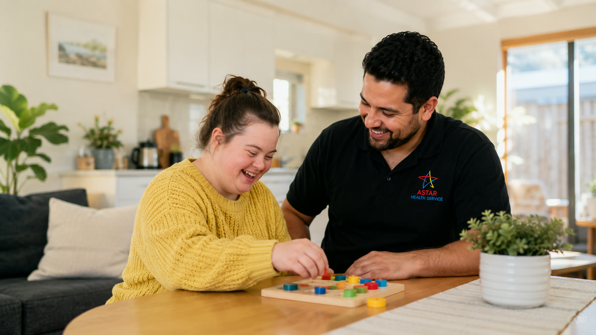
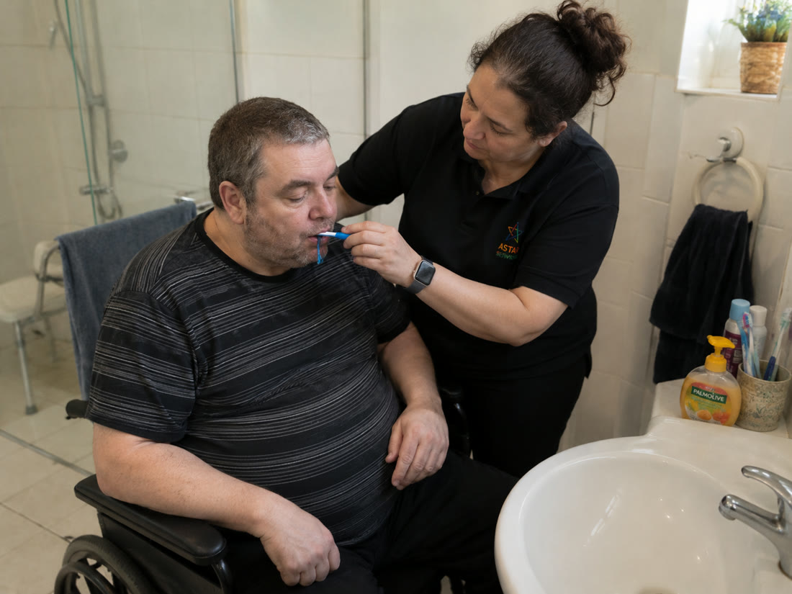
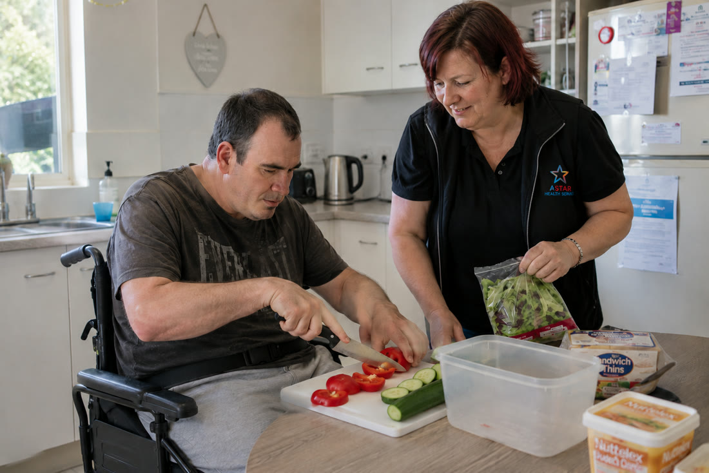
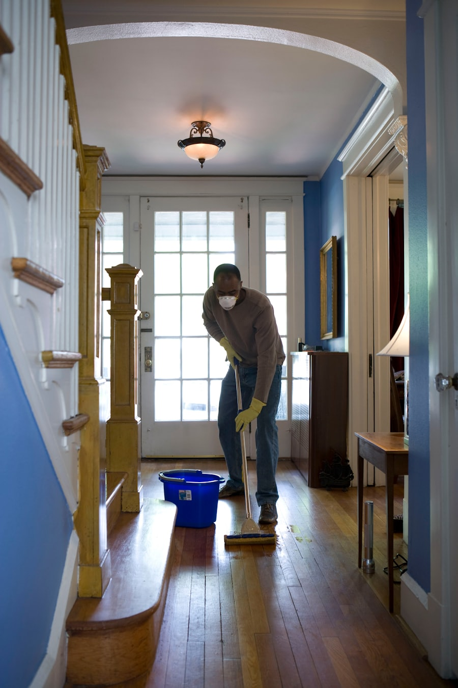
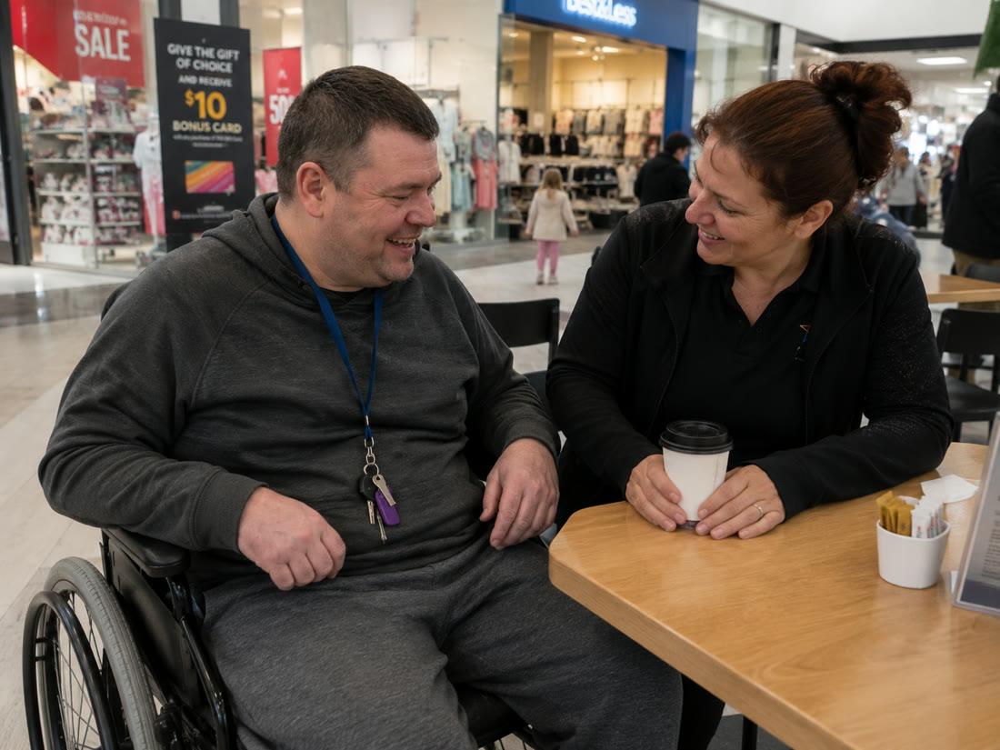
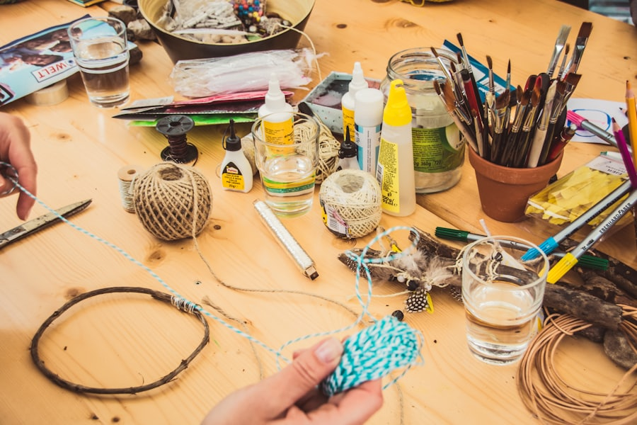
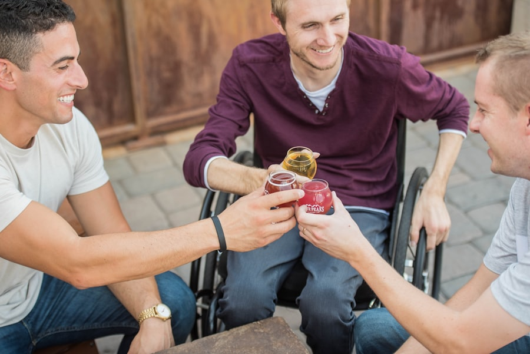
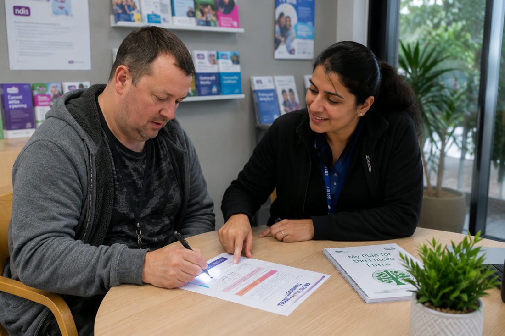
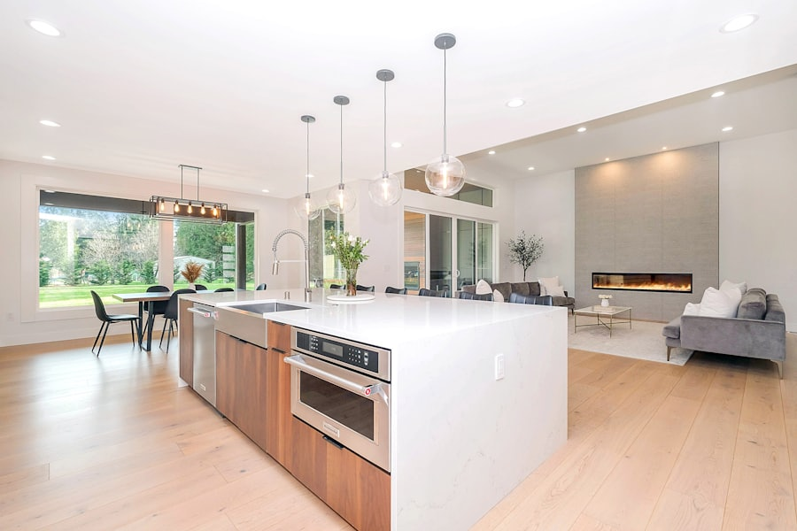

Support that helps you shine like a star
At Astar Health Service we deliver flexible, person-centred NDIS support built around your goals, your routine and your independence — with a team that genuinely listens.
Participants
Person-centred supports built around your plan, your goals and your way of living.
Families & carers
Reliable, consistent support and clear communication that gives you real peace of mind.
Support coordinators
A responsive provider you can refer to with confidence — quick, professional onboarding.
Allied health & hospitals
Smooth referrals and coordinated supports for safe transitions back to the community.
A local NDIS provider that puts people first
We're a registered NDIS provider based in Maddingley, Victoria, delivering warm, flexible support across metro and regional Victoria. Great support starts with genuine relationships, dignity and choice.
Matched support workers
Thoughtfully matched to your interests, needs and culture.
Flexible & consistent
The same familiar faces, on a schedule that fits your life.
You stay in control
Your plan, your goals, your choices — we help you make the most of your plan.
A full range of NDIS supports
As your needs change, the same trusted team is right there with you.

Assist Personal Activities
Respectful, hands-on help with personal care, hygiene, mobility and daily routines.
Learn more
Daily Tasks / Shared Living
Daily assistance in a shared or individual home so you can live more independently and safely.
Learn more
Household Tasks
Help with cleaning, laundry, meal prep and the everyday tasks that keep your home running.
Learn more
Community Participation
Get out, stay connected and do more of what you love — outings, hobbies and events.
Learn more
Innovative Community Participation
Creative, skill-building activities that open new pathways to community and economic participation.
Learn more
Group & Centre Activities
Engaging group programs that build skills, friendships and a sense of belonging.
Learn moreDevelopment of Life Skills
Practical coaching in cooking, budgeting, travel and communication.
Learn more
Assist Life-Stage Transition
Support to plan and navigate big life changes with clarity and confidence.
Learn moreTravel & Transport
Safe, reliable transport to appointments, work, study and social activities.
Learn more
Specialised Disability Accommodation
Information and support around purpose-built, accessible SDA housing options.
Learn moreSupport you can count on
Registered & compliant
We meet the NDIS Quality and Safeguards Commission's standards for safe, quality supports.
Person-centred plans
Support shaped around your goals, preferences and routine — reviewed with you over time.
Carefully matched team
Trained, screened workers chosen for the right fit — building trust and consistency.
Flexible & responsive
Support 7 days a week, with the ability to adapt as your needs and goals change.
Local to Victoria
Based near Bacchus Marsh, delivering supports across metro and regional Victoria.
Inclusive for all
We welcome people of every ability, culture, gender and background.
How working with Astar works
Starting with the NDIS shouldn't be overwhelming. We make it warm, clear and easy — five simple steps.
Reach out by phone or our form. No pressure, no jargon.
We get to know you, your goals and what matters most.
We design a flexible support plan that fits your NDIS funding.
You're matched with the right workers and supports begin.
Regular check-ins keep your supports working for you.
Supporting participants across Victoria
Based in Maddingley near Bacchus Marsh, delivering supports across metro and regional Victoria.
Don't see your suburb? Get in touch — we're often able to help nearby areas too.
Families who feel supported
The Astar team took the time to really understand my son. He looks forward to his program days and has grown so much in confidence — we finally feel supported.
Parent of an Astar participant
Reliable, kind and always on time. Having the same support workers each week has made a real difference to our routine and peace of mind.
Supported by Astar in Geelong
Illustrative of the feedback we aim for. Real, consented participant stories will be shared here.
Helpful guides for your NDIS journey
New to the NDIS? Start here
A plain-English overview of how NDIS supports work and what to expect when you begin.
Read more →How to choose the right provider
The questions worth asking so you find a provider that genuinely fits your goals.
Read more →Getting value from your funding
Practical tips to help you use your existing NDIS plan to work towards your goals.
Read more →Ready to find support that fits your life?
Whether you're new to the NDIS or looking to switch providers, our friendly team is here to help you take the next step with confidence.